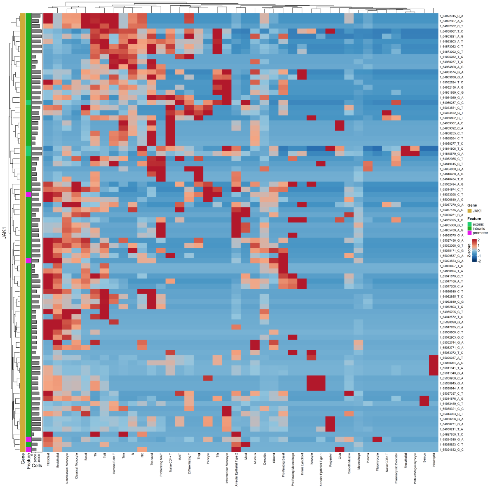

cell_level_DE.RmdCell-level differential SNP analysis focuses on identifying differential SNP expression between cell clusters.
To perform cell-level DE SNP analysis, use the findDESNPs function:
#Set up project
# Creat variantCell object (if you haven't already done so)
\dontrun{
# Initialize a variantCell project
project <- variantCell$new()
# In practice, you would add samples and build the database first
# project$addSampleData(...)
# project$buildSNPDatabase()
# project$setProjectIdentity("cell_type")
#Set metadata column as identity
project$setProjectIdentity("cell_type")#find DE SNPs between cell clusters
findDESNPs = function(ident.1,
ident.2 = NULL,
donor_type = NULL,
use_normalized = TRUE,
min_expr_cells = 3,
min_alt_frac = 0.2,
logfc.threshold = 0.1,
calc_p = TRUE,
p.adjust.method = "BH",
return_all = TRUE,
pseudocount = 1,
min.p = 1e-300,
debug = FALSE,
n_cores = NULL)
}Usage example:
#find DE SNPs between Trm and all others
DE_results <- project$findDESNPs(
ident.1 = "Trm",
use_normalized = TRUE,
n_cores = 15
)ident.1 is mandatory, while ident.2 can
optionally be used to compare to a second identity. Use the
n_cores parameter to set how many processing cores will be
used.
A dataframe will be returned with the DE SNP results.
A heatmap can be generated illustrating DE SNP expression (requires ComplexHeatMap and circlize):
#plot SNPs in heatmap
plotSNPHeatmap = function(
genes = NULL,
snp_indices = NULL,
group.by,
split.by = NULL,
min_alt_frac = 0.2,
scale_data = TRUE,
max_scale = 2,
cluster_rows = TRUE,
cluster_cols = TRUE,
show_rownames = TRUE,
show_colnames = TRUE,
fontsize_row = 8,
fontsize_col = 8,
exclude_empty = TRUE,
normalize_by_cells = TRUE,
data_out = FALSE
)
#plot JAK1 SNPs in heatmap (entire dataset) - using 'simple' idents
project$plotSNPHeatmap(
genes = c("JAK1"),
group.by = "Idents.Simple",
min_alt_frac = 0
)